IL MATTINO ⌾ SALA E CUCINA IN COMUNE
La tavola
del mattino
OGNI MATTINA, COLAZIONE CON PRODOTTI FATTI IN CASA E MATERIE PRIME DEL TERRITORIO DELLA VAL DI RABBI.
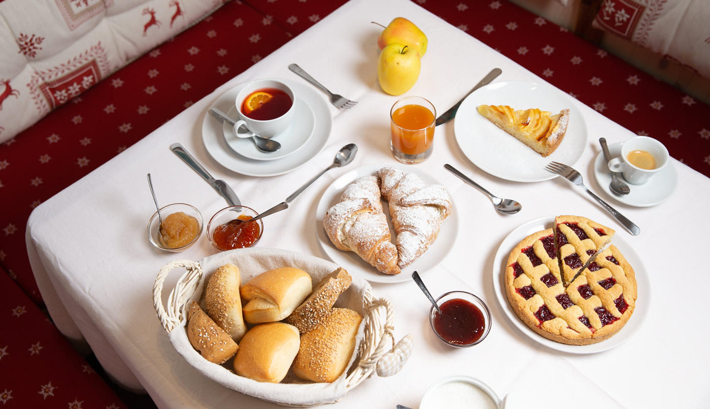
LA COLAZIONE ▸ APPARECCHIATA NELLA SALA COMUNE
IL DOLCE E IL SALATO ⌾ FATTO IN CASA
Quel che esce
dal forno
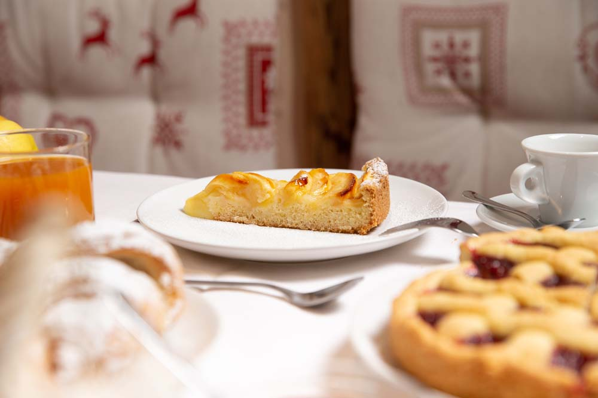
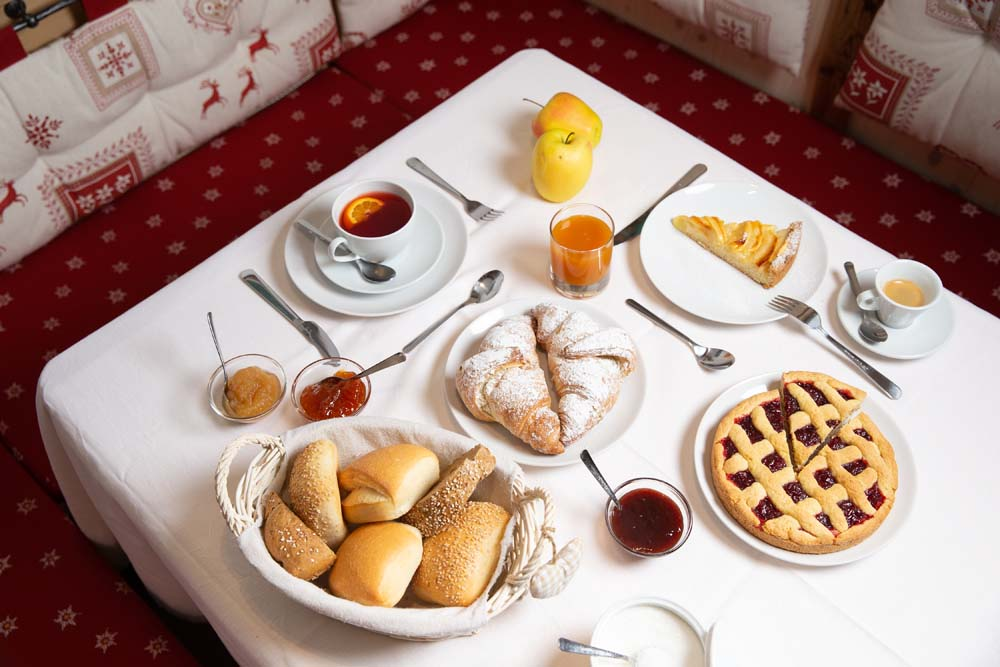
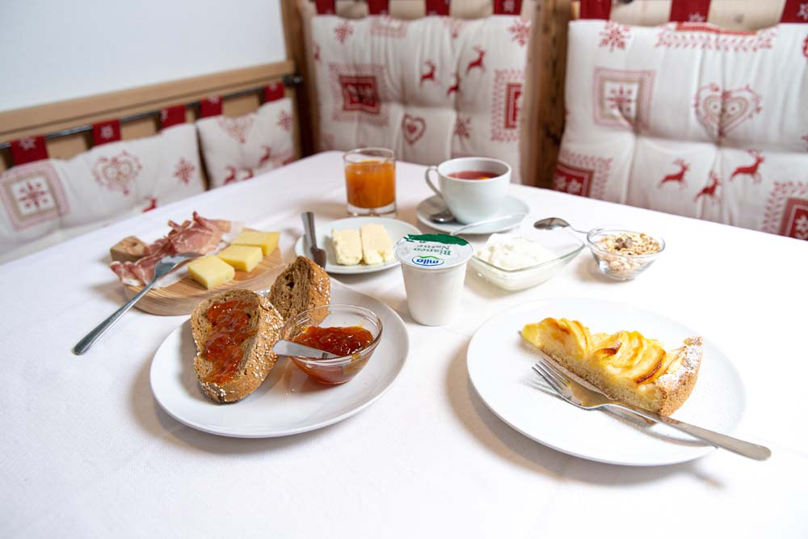
Torte fatte in casa, il buffet del dolce e del salato, e quel che la stagione porta dall'azienda agricola: un momento semplice e genuino, che racconta il legame tra il maso, la terra e chi lo vive.
IL PIANO TERRA ⌾ LA SALA COMUNE
La sala
del camino
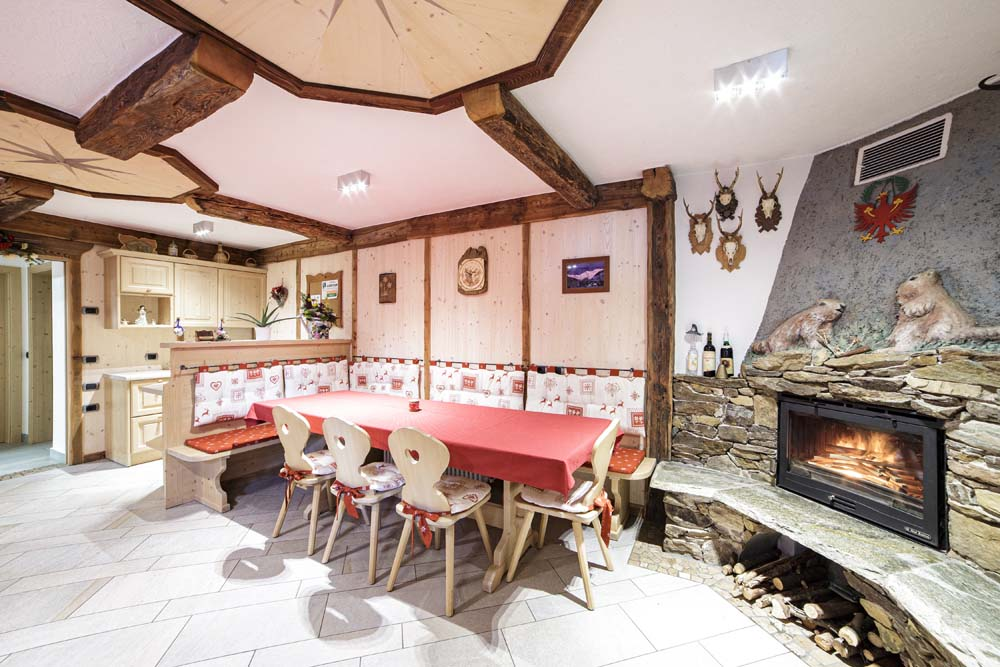
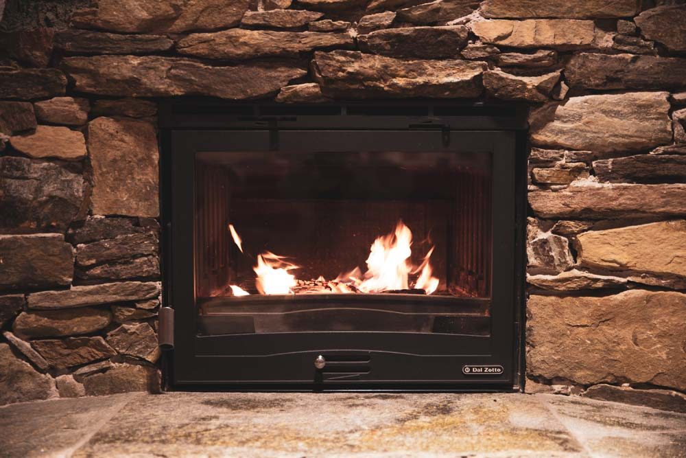
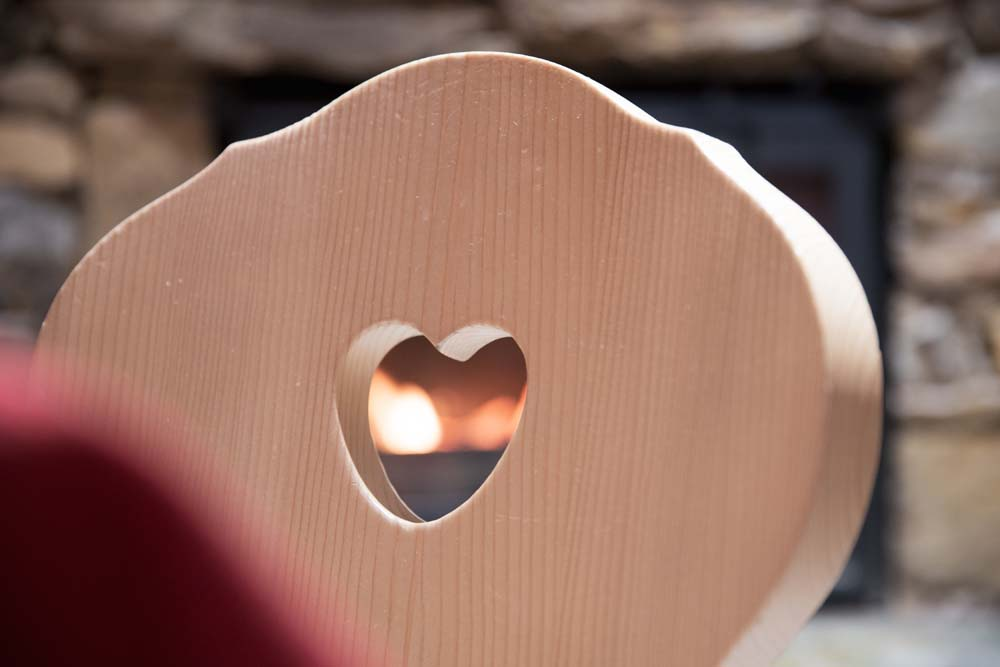
Al piano terra, la sala comune serve le colazioni e tiene insieme la giornata: si fa tavolata, si gioca a carte, si sta davanti al camino quando fuori nevica.
L'AUTONOMIA ⌾ LA CUCINA ATTREZZATA
La cucina,
vostra
IL MASO SI PRENOTA PER INTERO: LA CUCINA È A VOSTRA DISPOSIZIONE, COME IL RESTO DELLA CASA.
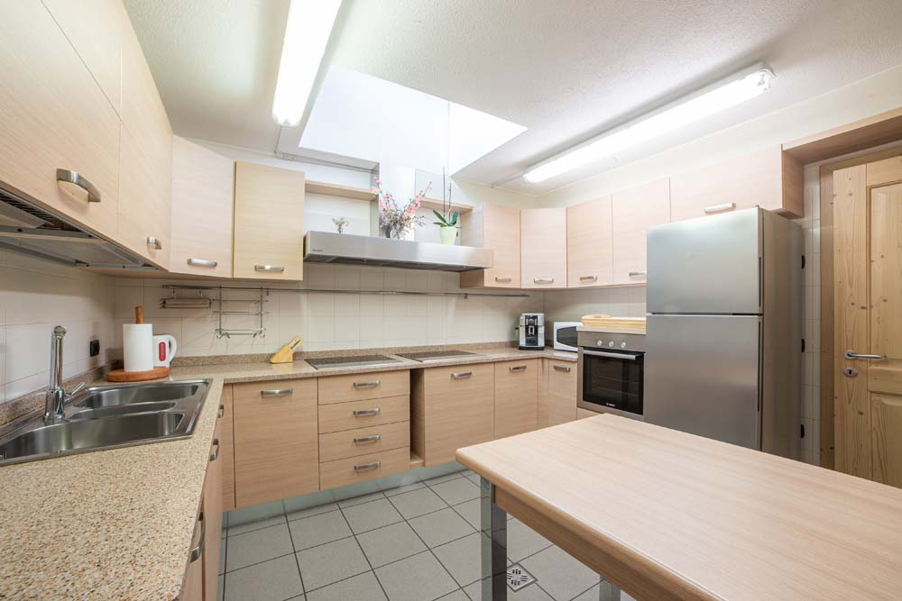
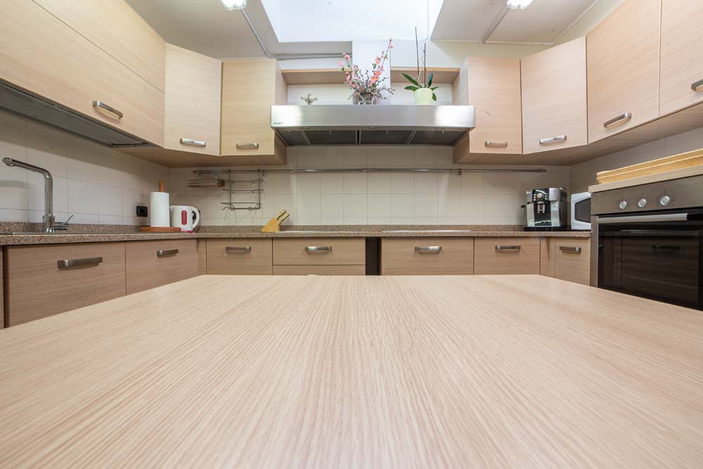
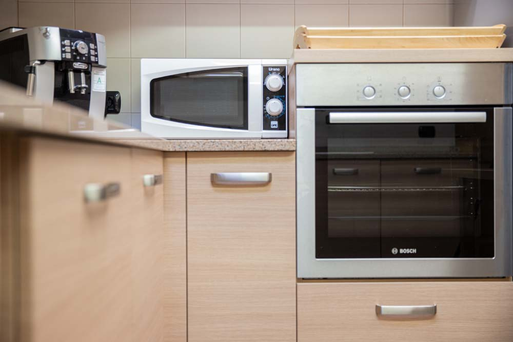
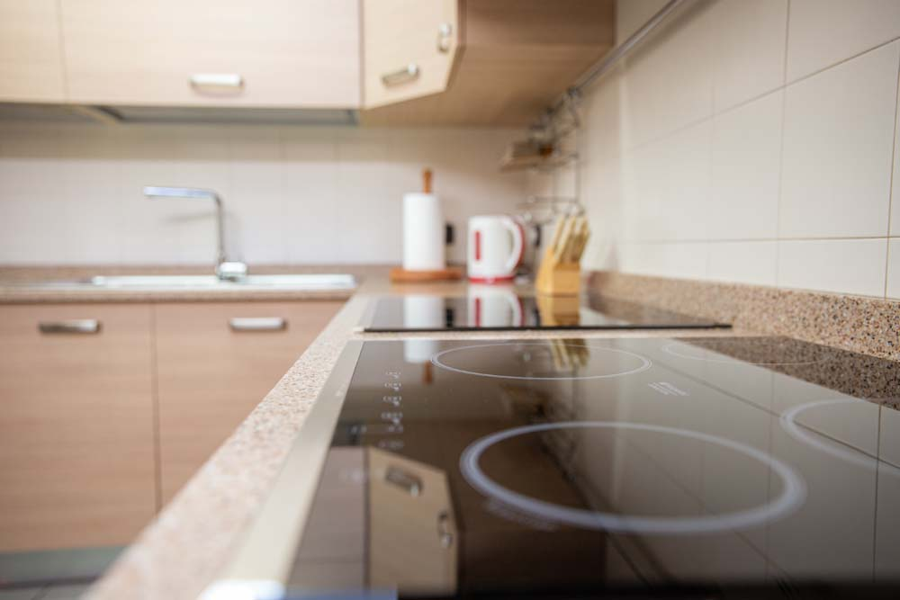
IL MATTINO ⌾ SENZA SVEGLIA
Il forno
è già acceso
PRENOTATE LE DATE E PENSIAMO NOI AL RESTO: LA COLAZIONE SI PREPARA AL MASO, OGNI MATTINA.